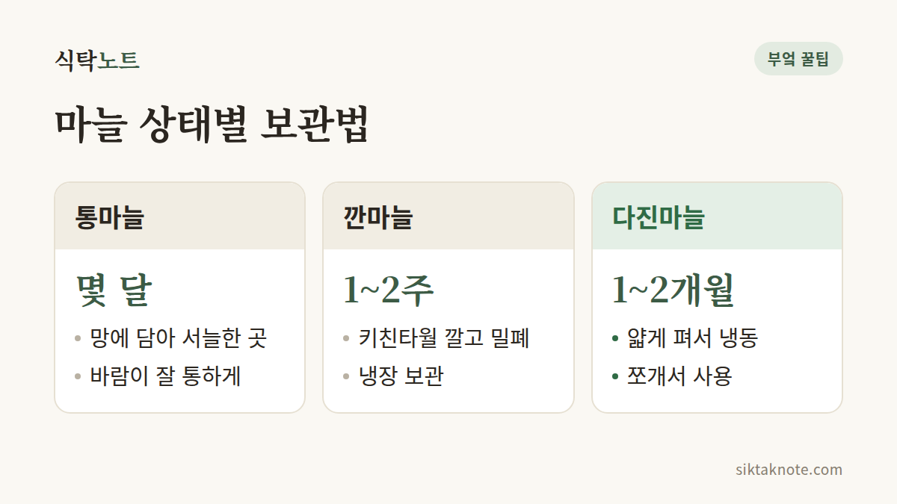

마늘 오래 보관하는 법 — 통마늘·깐마늘·다진마늘

3줄 요약
- 통마늘은 망에 담아 바람 잘 통하는 서늘한 곳에, 깐마늘은 키친타월을 깔고 냉장해요.
- 다진마늘은 얇게 펴서 얼려 두면 필요한 만큼 똑똑 떼어 쓸 수 있어요.
- 마늘을 기름에 담가 실온에 두는 건 위험하니 꼭 냉장해 주세요.

껍질째, 깐 것, 다진 것은 자리가 달라요
통마늘은 양파망이나 통풍이 되는 바구니에 담아서, 햇빛이 안 드는 서늘하고 바람 잘 통하는 곳에 두세요. 습하면 곰팡이가 피고 싹이 나거든요. 껍질은 벗기지 않은 채로 두는 게 좋아요.
통마늘은 냉장고에 넣지 않는 편이 나아요. 냉장고 온도에서는 오히려 싹이 나기 쉽다고 알려져 있거든요. 껍질을 벗긴 뒤에야 냉장고가 맞는 자리가 돼요.
깐마늘은 사정이 달라요. 밀폐 용기 바닥에 키친타월을 깔고 담아 냉장하면 되는데, 키친타월이 습기를 먹어 줘서 무르는 걸 늦춰 줘요. 그래도 1~2주 안에는 쓰는 게 좋아요. 키친타월이 눅눅해졌다면 새것으로 갈아 주세요. 습기가 남아 있으면 그 자리부터 물러지기 시작해요.

종류에 따라 보관력이 달라요
마늘이라고 다 같은 건 아니에요. 제주나 고흥 같은 남쪽 지방에서 나는 난지형 마늘은 싹이 빨리 나서, 김장철 안에 먼저 쓰는 게 좋다고 해요. 추운 지방에서 기르는 한지형 마늘은 이듬해 봄까지도 두고 먹을 수 있고요.
통마늘은 가끔 손으로 쥐어 보세요. 단단하면 괜찮고, 속이 말랑하거나 유난히 가벼운 쪽은 먼저 쓰는 게 좋아요. 싹이 올라오기 시작한 것도 따로 빼 두었다가 먼저 쓰세요.

다진마늘은 얇게 펴서 얼려 두면 편해요
다진마늘이든 편마늘이든 방법은 같아요.
- 마늘을 다지거나 얇게 저며요.
- 지퍼백에 담아 납작하고 얇게 펴요.
- 젓가락으로 눌러 바둑판 모양으로 선을 그어 둬요.
- 얼린 뒤에 필요한 만큼 똑똑 부러뜨려 쓰면 돼요. 1~2개월 안에 쓰세요.
얼리면 식감은 변하지만 양념용으로 쓰기엔 문제가 없어요. 한 번 녹은 마늘을 다시 얼리면 물러지니, 한 번 쓸 만큼씩 나눠 얼려 두세요. 냉동하지 않고 냉장고에 둘 거라면 5일을 넘기지 않는 게 좋고요.
기름에 담가 실온에 두면 위험해요
깐마늘을 올리브유나 식용유에 담가 실온에 두는 건 위험해요. 공기가 없는 곳에서 자라는 보툴리눔균이 생길 수 있어서예요. 마늘 기름을 만들었다면 꼭 냉장하고 며칠 안에 먹어야 해요. 집에서 만든 건 4일 안에 먹는다고 생각해 두면 안전해요. 병에 만든 날짜를 적어 두면 며칠째인지 헷갈리지 않아요. 오래 두고 싶다면 냉동이 안전하고요. 마늘뿐 아니라 허브나 고추 같은 채소를 기름에 담갔을 때도 마찬가지예요.
마늘이 푸르게 변했다면
다진마늘이나 마늘이 푸른빛, 청록빛으로 변하는 경우가 있어서 처음 보면 놀라기 쉬워요. 마늘 속 성분이 반응해서 생기는 현상으로 알려져 있고, 먹어도 해롭지 않다고 해요. 식초나 레몬즙처럼 신맛 나는 재료와 닿을 때 특히 잘 생겨서, 장아찌를 담갔는데 마늘이 푸르게 변했어도 상한 건 아니에요. 다만 보기에 좋지는 않으니 신선할 때 쓰는 편이 좋아요. 푸른빛과 함께 곰팡이나 시큼한 냄새가 있다면 얘기가 달라요. 그땐 버리세요.
싹이 났어도 먹을 수 있어요
싹이 올라와도 먹을 수 있어요. 가운데 초록 싹은 쓴맛이 나니 잘라내고 쓰면 되고요. 싹을 틔워 잘라 쓰면 마늘종처럼 요리에 넣을 수도 있어요. 감자는 싹에 독성 성분이 있어서 마늘과는 사정이 달라요. 감자 쪽이 궁금하다면 감자에 싹이 났을 때 손질법을 봐 주세요.
궁금한 것 두 가지
깐마늘도 냉동해도 돼요? 껍질 벗긴 쪽마늘을 지퍼백에 담아 그대로 얼려도 돼요. 다만 녹으면 물러지니, 다지거나 양념에 섞어 쓰는 용도로 생각하세요.
말랑해진 마늘, 먹어도 돼요? 마르면서 조금 쪼그라든 정도라면 쓸 수 있어요. 하지만 물러서 즙이 나오거나 시큼한 냄새가 난다면 버리는 게 안전해요.
이런 마늘은 보내 주세요
곰팡이가 폈거나, 물러서 즙이 나오거나, 시큼한 냄새가 난다면 버리세요.
마늘은 모습이 바뀔 때마다 편해하는 자리도 바뀐다고 생각하면 기억하기 쉬워요.